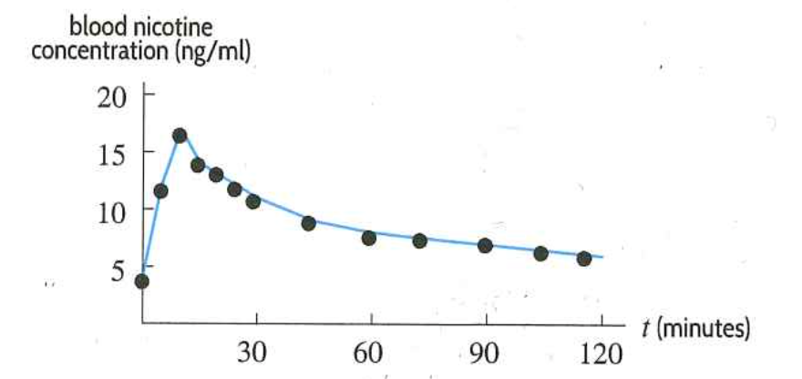

When a person smokes a cigarette, the nicotine from the cigarette enters the body through the lungs, is absorbed into the blood, and spreads throughout the body. Most cigarettes contain between \(0.5\) and \(2.0\) mg of nicotine; approximately 20% (between \(0.1\) and \(0.4\) mg) is actually inhaled and absorbed into the person’s bloodstream. As the nicotine leaves the blood, the smoker feels the need for another cigarette. The half-life of nicotine in the bloodstream is about 2 hours. The lethal dose is considered to be about \(60\) mg.
The nicotine level in the blood rises as a person smokes, and tapers off when smoking ceases. Table 7.4.2 shows blood nicotine concentration (in ng/ml) during and after the use of cigarettes. (smoking occurred during the first ten minutes and the experimental data shown represent average values for ten people.)
| \toprule t \textrm{ (mintues) } | 0 | 5 | 10 | 15 | 20 | 25 | 30 | 35 | 60 | 75 | 90 | 105 | 120 |
| \midrule C \textrm{ (ng/ml) } | 4 | 12 | 17 | 14 | 13 | 12 | 11 | 9 | 8 | 7.5 | 7 | 6.5 | 6 |
| \bottomrule |
